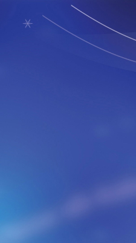
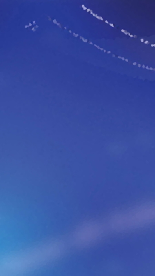
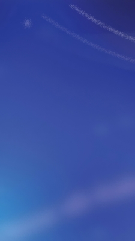

Treaders Layout
Denne typen layout må brukes med omhu, akkurat som tokolonners layout.
Det finnes et brytningspunkt der de tre elementene blir så smale at
designet ser rart ut. Denne typen visning egner
seg best på brede skjermer, og dermed dårlig på mobil. da må bildene komme
under hverandre. I eksempelet ser du en sammenligning av tre effekter laget
i programmet paint.net. Originalbildet er til venstre, det i midten er
krystallisert, og det til venstre er frostet.